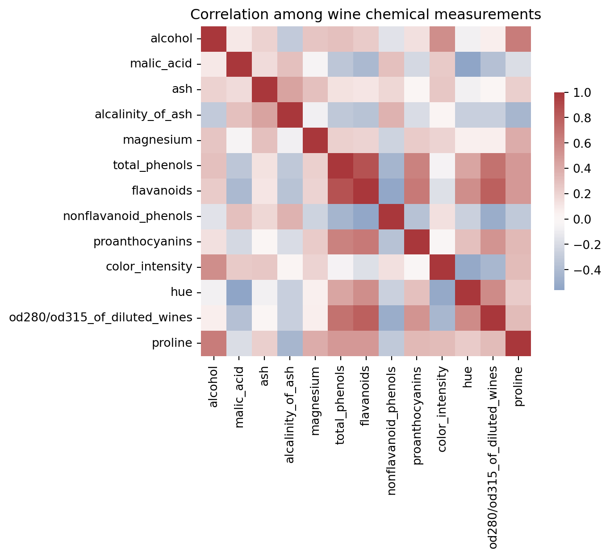
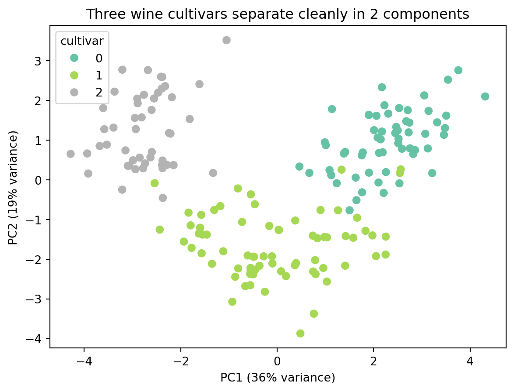

The workhorse modality. This chapter covers wrangling, comparison, and the visualization of structure across many variables — including correlation and a first look at dimensionality reduction with PCA.
📖 Background & Motivation
Tabular data — rows of observations, columns of variables — is the most common shape data takes, and it is deceptively hard to visualize well once the number of variables grows. A handful of columns can be shown with bars, scatterplots, and small multiples. But real datasets often have dozens of variables, and the challenge becomes seeing structure: which variables move together, which observations cluster, where the outliers are.
This week builds wrangling fluency, then moves to multivariate visualization: pair plots, correlation heatmaps, and PCA. We treat PCA not as a statistics lecture but as a visualization tool — a way to project many dimensions down to two so the eye can see grouping that no single pairwise plot reveals. PCA reappears conceptually in the embedding work of Week 13.
🔎 Learning Objectives
Reshape, group, and join tabular data fluently with pandas.
Visualize many variables at once using pair plots and correlation heatmaps.
Apply PCA to project high-dimensional tabular data to 2D for visual inspection.
Judge when aggregation clarifies and when it hides important variation.
📚 Readings & Resources
Wilke, Fundamentals of Data Visualization, Ch. 12 (Visualizing associations).
Block 1 — Concepts & Theory (~30 min). The multivariate problem (8) · pairwise structure: scatter matrices and correlation heatmaps (10) · PCA as a visualization tool (10) · aggregation vs. detail; Simpson’s paradox (2).
Block 2 — Guided Demonstration (~30 min). Wrangle: reshape + groupby + merge (10) · pair plot and correlation heatmap (10) · fit PCA, plot the first two components (10).
☕ Break (~10 min).
Block 3 — Hands-On (~40 min). Wrangle into tidy form (10) · correlation heatmap + PCA projection (20) · wrap the PCA scatter into a Streamlit app with a color-by selector (10).
Block 4 — Wrap-Up (~10 min). Share PCA projections; what clustered and why? (6) · preview homework (4).
💻 Live Code
We use the Wine dataset (ships with scikit-learn): 13 numeric chemical measurements across three cultivars — a genuinely multivariate problem.
Wrangle and summarize
from sklearn.datasets import load_wineimport pandas as pdwine = load_wine(as_frame=True)df = wine.frameprint("Shape:", df.shape)df.groupby("target")[["alcohol", "color_intensity", "proline"]].mean()
Shape: (178, 14)
alcohol
color_intensity
proline
target
0
13.744746
5.528305
1115.711864
1
12.278732
3.086620
519.507042
2
13.153750
7.396250
629.895833
Correlation heatmap
import seaborn as snsimport matplotlib.pyplot as pltnum = wine.data # the 13 numeric featuressns.heatmap(num.corr(), cmap="vlag", center=0, square=True, cbar_kws={"shrink": 0.6})plt.title("Correlation among wine chemical measurements")plt.show()

PCA projection to 2D
from sklearn.preprocessing import StandardScalerfrom sklearn.decomposition import PCAX = StandardScaler().fit_transform(wine.data) # standardize first!pca = PCA(n_components=2)pcs = pca.fit_transform(X)plt.figure()scatter = plt.scatter(pcs[:, 0], pcs[:, 1], c=wine.target, cmap="Set2")plt.xlabel(f"PC1 ({pca.explained_variance_ratio_[0]:.0%} variance)")plt.ylabel(f"PC2 ({pca.explained_variance_ratio_[1]:.0%} variance)")plt.title("Three wine cultivars separate cleanly in 2 components")plt.legend(*scatter.legend_elements(), title="cultivar")plt.show()

Notice that no single pairwise plot of the 13 features would separate the cultivars this cleanly — PCA finds the directions that do.
Wrap into a Streamlit app (copy-and-run)
# app.py — run with: streamlit run app.pyimport streamlit as stfrom sklearn.datasets import load_winefrom sklearn.preprocessing import StandardScalerfrom sklearn.decomposition import PCAimport pandas as pdwine = load_wine(as_frame=True)X = StandardScaler().fit_transform(wine.data)pcs = PCA(n_components=2).fit_transform(X)plot_df = pd.DataFrame(pcs, columns=["PC1", "PC2"])plot_df["cultivar"] = wine.target.astype(str)st.title("Wine PCA Explorer")st.scatter_chart(plot_df, x="PC1", y="PC2", color="cultivar")
🧪 In-Class Activity
On a many-variable dataset, build a pair plot, a correlation heatmap, and a PCA scatter.
Discuss: Which pairwise relationships are strongest, and does PCA agree? What does PC1 seem to capture? Where does the heatmap mislead (correlation ≠ causation)?
🏠 Homework
Choose a dataset with at least six numeric variables.
Produce a correlation heatmap and a PCA projection, colored by a meaningful category.
Write a short interpretation: what structure do you see, and what does PC1/PC2 represent?
Submit as a Streamlit app (with a color-by widget) or .ipynb + .html.